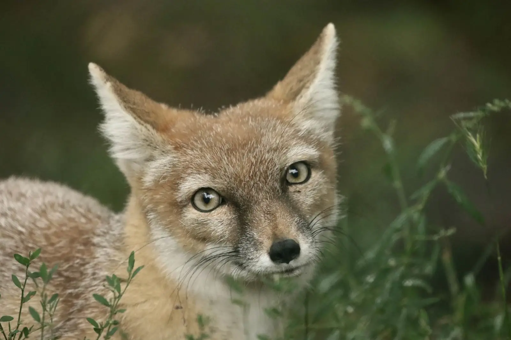
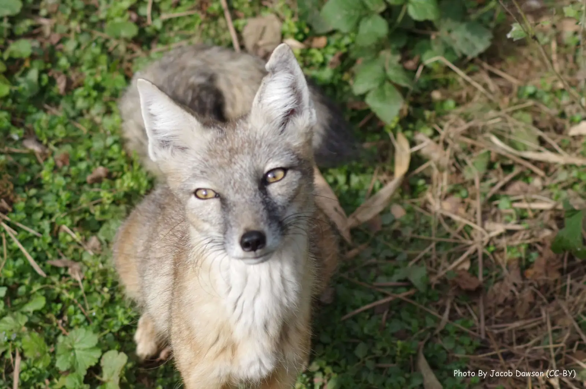

The Corsac fox inhabits most of central Asia, along with the Blanford's fox. It ranges from Kazakhstan, to Afghanistan and Iran, and some lower parts of Russia.
The Corsac fox has a very diverse diet, consisting of voles, gerbils, birds, pikas, fruits, and seeds. They catch their prey by pouncing on them from above, and they forage, adapting their diet to whatever is around them.
The Corsac fix has one of the largest lifespans of all fox species, being an astounding 13 years average. For comparison, the average age for a fox is 9-10 years.
The Corsac fox is nomadic, meaning it doesn't have a permanent home and instead travels from place to place. Sadly, due to recent conflicts, they have been almost completely exterminated from Iran.


Photo by unknown from unknown
Photo by unknown from unknown